Префектура Исикава · полуостров Ното · еда и ремесло
Кто стоит за кухней villa della pace: фермеры, рыбаки и мастера полуострова Ното
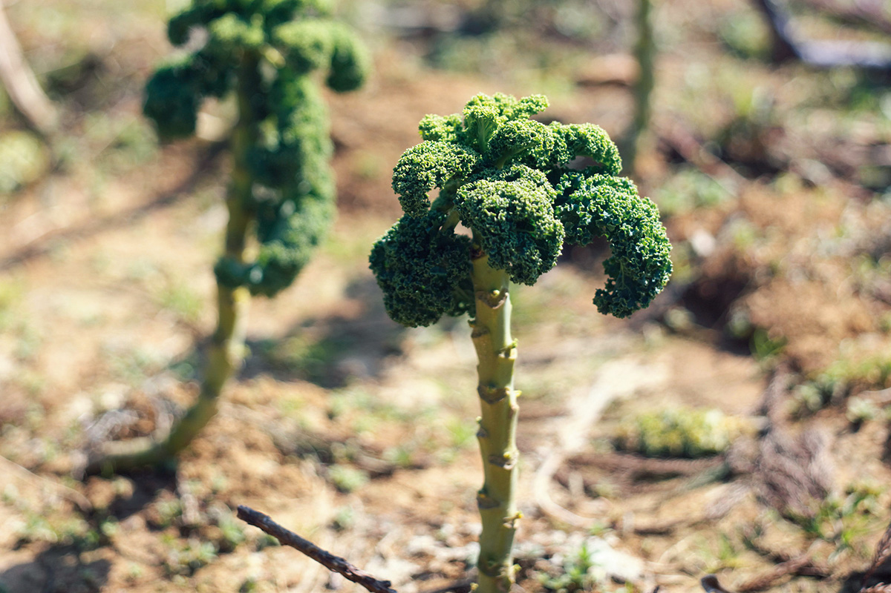
Итальянская обержа villa della pace стоит в Нанао, на берегу залива полуострова Ното. За каждой тарелкой её шефа стоят фермеры, рыбаки и мастера посуды, которых он нашёл сам.
Люди
Кухня, которую не сделать в одиночку
Владелец и шеф villa della pace Мэйдзю Хирата берёт продукты, посуду и приборы только у тех, с кем познакомился лично и с кем успел подружиться. Вот что говорят эти люди о работе с шефом.
Фермеры рассказывают, что весной он берёт цветущие побеги самых разных овощей: на кухне находится место для растения на любой стадии роста, и это их особенно радует. Глава рыбацкой артели благодарен за то, что шеф вкусно готовит их рыбу и тем самым поднимает её цену. Устричный фермер знает шефа с тех пор, как тот работал в ресторане в Токио.
«Пусть научит нас есть устрицы так, как мы сами не додумаемся. А если ресторан прогорит, я ему говорю: приходи работать к нам»
устричный фермер
С мастером стекла шефа познакомили общие друзья, и он влюбился в его посуду с первого взгляда. Обычно Хирата придумывает блюдо, глядя на посуду, но на этот раз, по его словам, всё вышло наоборот. Мастер был удивлён, когда у него попросили несколько экземпляров вещи, сделанной в одном экземпляре.
Керамистка как-то заметила, что её работа «похожа на красную землю Ното», и шеф взял эту посуду, керамику под слоем лака, для блюда «Поле» в своём сете. В первый же приезд его покорили её мастерская с видом на горы Ното и сами вещи, в которых виден характер автора. Другой керамист охотно берётся за всё необычное, и шеф заказал у него посуду целиком по своему замыслу. «Вечно просит что-нибудь хлопотное», смеётся мастер.
«Ешь его еду и видишь пейзаж, а не только цвет и вкус. Она возвращает тебе память о запахе соломы из деревенской жизни Ното»
мастер лака
Знакомство с мастером лака началось с того, что он однажды просто зашёл в villa della pace поужинать. Потом они вместе ходили в горы за грибами.
«Все они стали частью природы Ното и ищут в ней своё дело. Удивительные люди»
шеф Мэйдзю Хирата
Овощи
«Ното Така ноэн»: триста сортов на красной земле
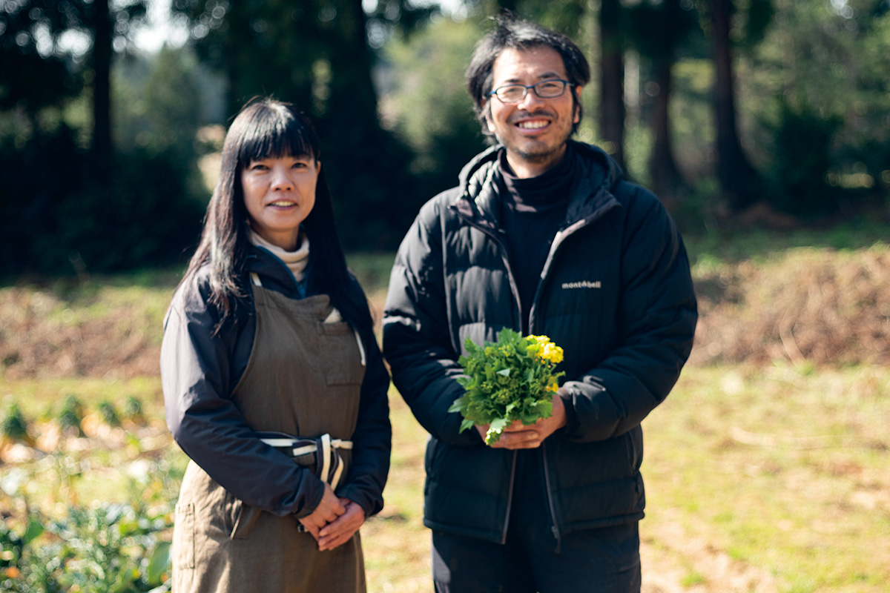
На красной земле Ното супруги выращивают больше 300 сортов японских традиционных и европейских овощей, без химии, по принципам природного земледелия. Красная почва богата минералами и очень вязкая, овощи растут в ней медленно, и вкус становится концентрированным. Повар может заказать овощ нужного ему размера, и ферма вырастит именно такой.
Ферма стоит на острове Нотодзима в заливе Нанао. Землетрясение 1 января 2024 года и ливни сентября того же года сильно повредили поля, и восстанавливать их будут ещё долго. Ферма работает в основном с ресторанами и продаёт овощи частным покупателям через интернет-магазин.
«Ното Така ноэн»
- Сайт
- taka-farm.com
Рыба
«Хинодэ Осики»: ставные сети и забота о море
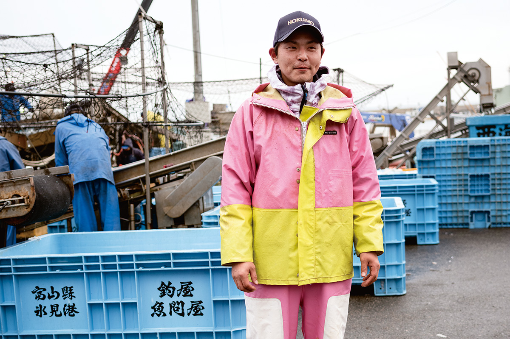
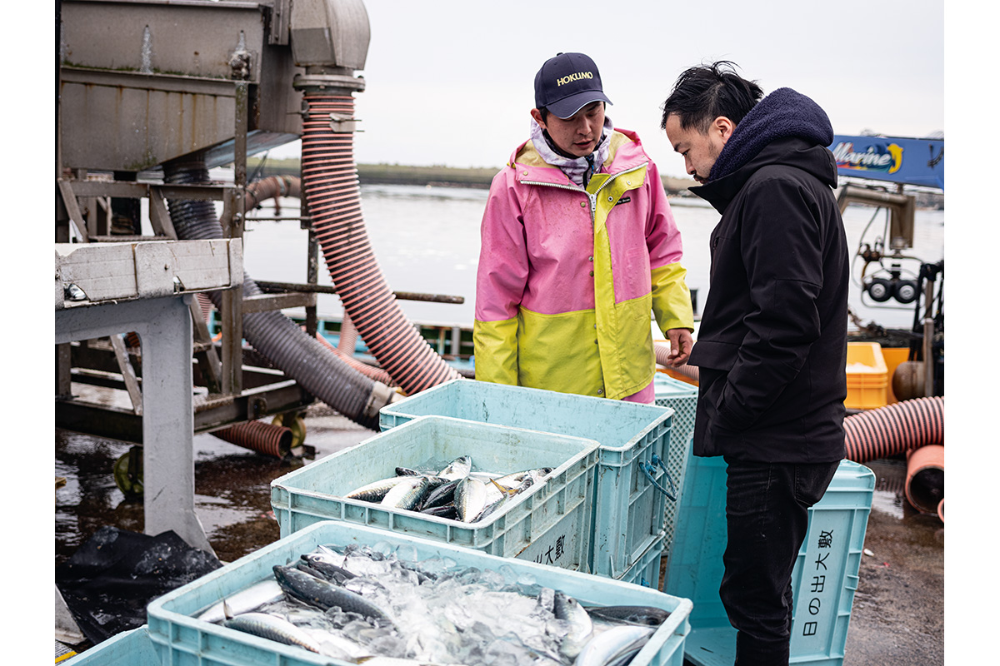
Артель «Хинодэ Осики» ловит рыбу ставными сетями в городке Ното-тё, на северо-восточном берегу полуострова. Её нынешний глава в пятом поколении всё время пробует новое: продаёт рыбу напрямую ресторанам и одним из первых среди рыбаков Ното начал забивать рыбу сразу после улова по методу икэдзимэ. Чтобы не истощать море, артель ограничивает улов, а глава ходит в местные школы рассказывать детям о еде и рыбе.
«Хинодэ Осики»
- Сайт
- hinodeoshiki.jp
Устрицы
«Миямото суйсан»: каждую раковину моют по одной
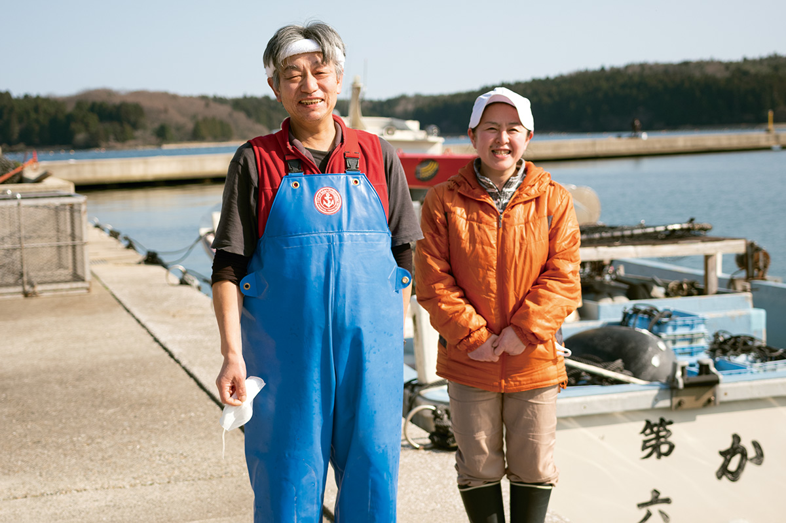
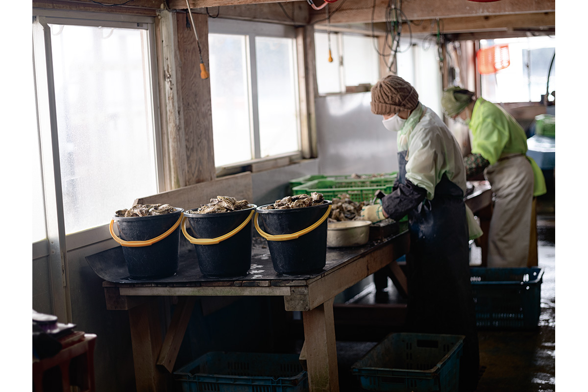
Устрицы «Миямото суйсан» растут в чистой воде залива, куда почти не попадают бытовые стоки. Перед сбором каждую устрицу моют по одной и снова опускают в море, чтобы она подросла. Потом идёт строгий отбор, и на рынок попадают только лучшие. Фермеры советуют попробовать и весенние устрицы: у них мягкий, округлый вкус.
У хозяйства есть магазин рядом со станцией Нисигиси местной железной дороги Ното. В уголке, где устрицы жарят в раковине прямо у своего места, работа возобновилась 11 апреля 2026 года, пока только по субботам и воскресеньям.
«Миямото суйсан»
- Адрес
- префектура Исикава, Нанао, Накадзима-мати Содэ, и-29
- Телефон
- +81 767-66-0002
- Часы работы
- магазин 10:00–17:00; жареные устрицы 11:00–15:00, только суббота и воскресенье
- Выходные
- вторник
- Как добраться
- 2 минуты пешком от станции Нисигиси
- Сайт
- notokaki.com
Стекло
kota glass: выдувное стекло в доме тёти
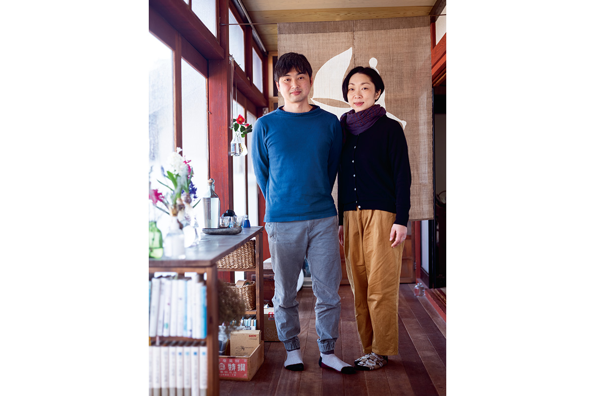
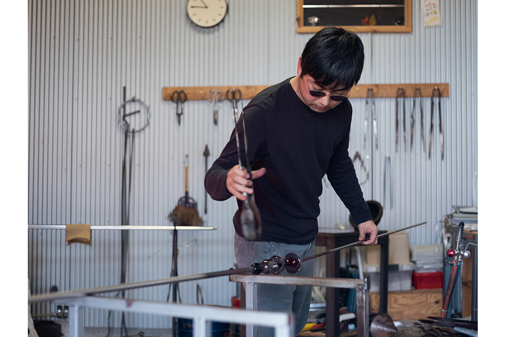
Мастер стекла обустроил мастерскую в доме своей тёти, художницы. На Ното он когда-то побывал всего один раз, и именно воспоминание «хочу вернуться» привело его сюда. Выдувному стеклу больше 2000 лет, и он работает с мыслью, что стоит на самом его переднем крае.
kota glass
- Сайт
- kotaglass.com
Лак
Мастер лака: как «стереть» себя в работе
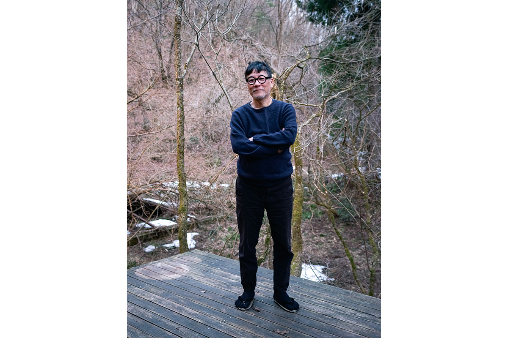
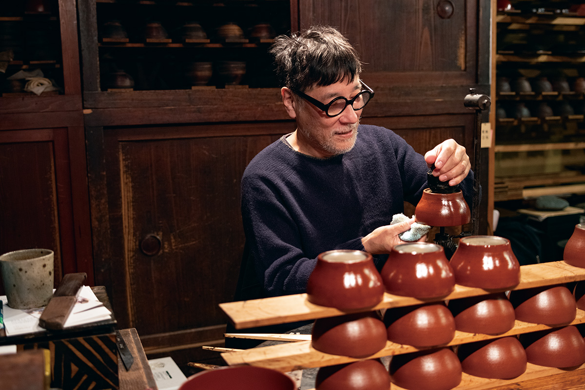
В 2021 году мастер лака жил в Вадзиме уже 33 года: он переехал сюда из Токио и стал нуси, мастером лака Вадзима-нури. Основа его работы «уцуси», повторение старых образцов. Главное для него в том, насколько бережно выполнить работу, которую передавали из поколения в поколение, и как «стереть» в ней самого себя. Он живёт жизнью Ното, радуется ей и каждый день возвращается к своему делу.
«Акито Акаги уруси кобо»
- Телефон
- +81 768-26-1922
- Сайт
- nurimono.net
Керамика
Первобытная простота: керамика под лаком
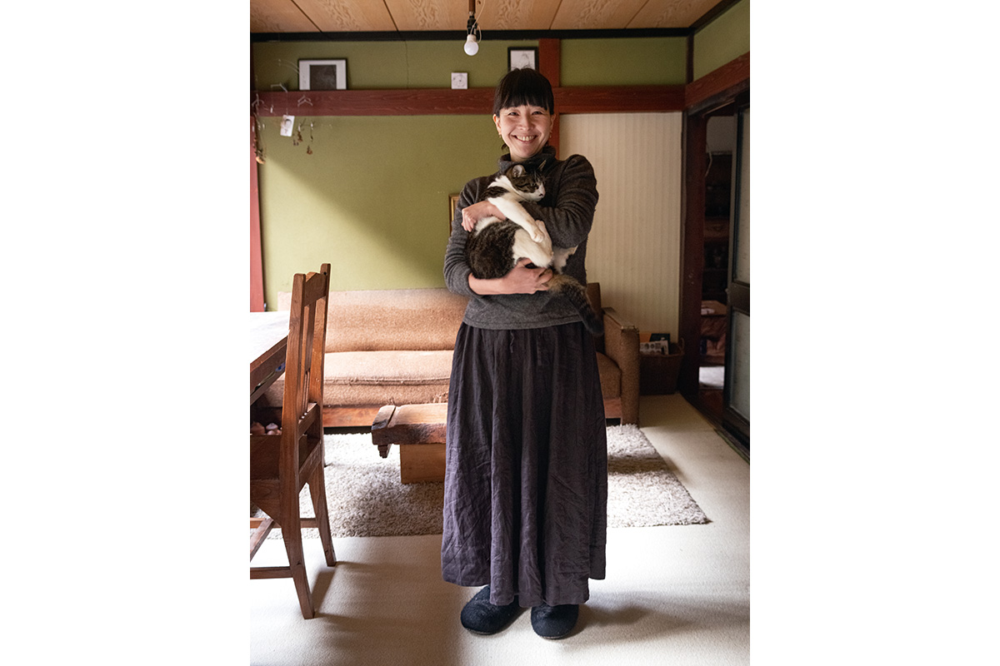
Керамистка работает в технике бидзэн-яки, грубой неглазурованной керамики, и делает «тотай сикки»: глиняные вещи, покрытые лаком. Сила и фактура бидзэна в её руках становятся мягче. Для обжига она берёт рисовую шелуху без пестицидов у местных фермеров. С переездом на Ното, говорит она, характер её работ изменился. С 2023 года она работает в Канадзаве.
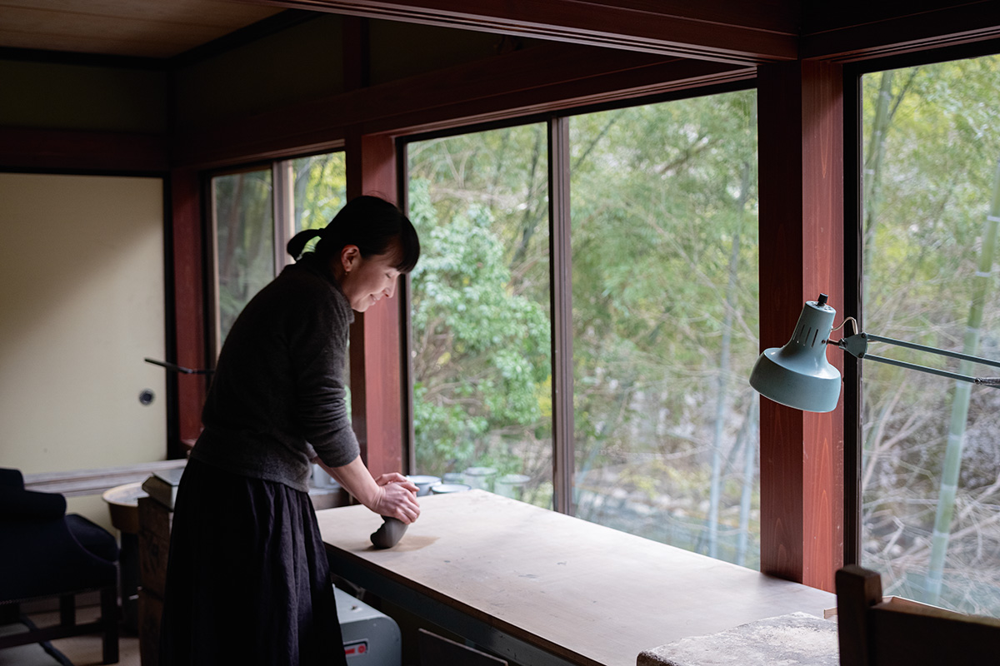
MATSUMOTO KAORU
Посуда
«Доппо-эн»: дизайнер, который стал керамистом
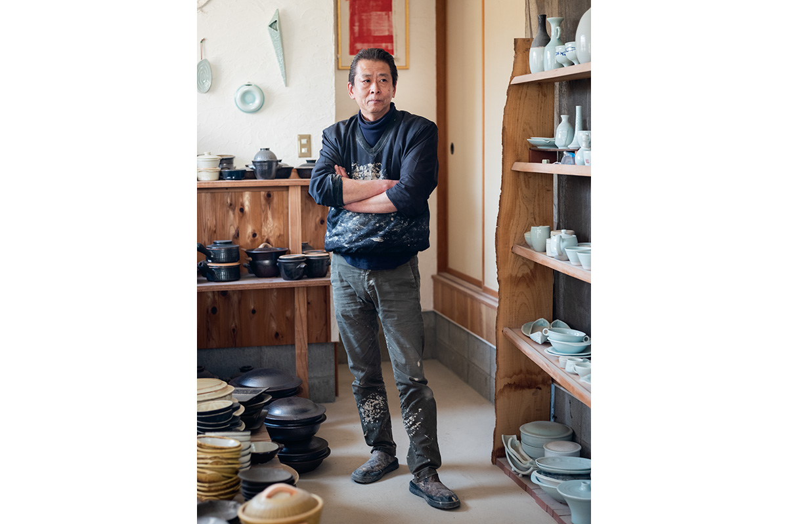
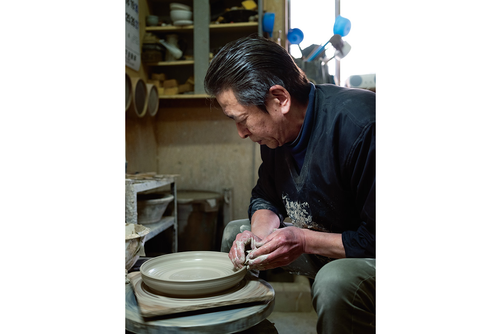
Керамист «Доппо-эн» раньше работал дизайнером в компании, а гончарному делу учился сам. Сложный заказ его не пугает: для него это повод придумать что-то новое. Он работает и с глиной, и с фарфором, и из его рук выходит всё подряд: тарелки, чайники, скульптуры.
«Доппо-эн»
- Сайт
- doppo.jp
villa della pace
- Адрес
- префектура Исикава, Нанао, Накадзима-мати Сиоцу, оцу ха-бу 26-1
- Телефон
- +81 767-88-9017
Фото: Яёи Аримото.